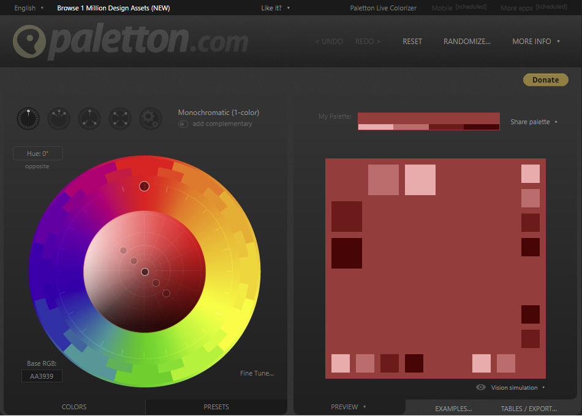
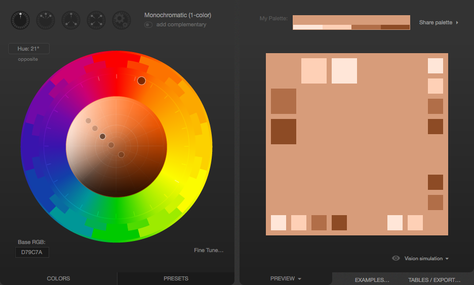
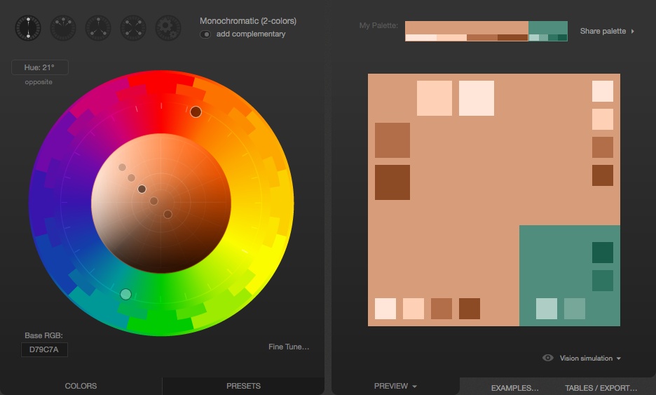
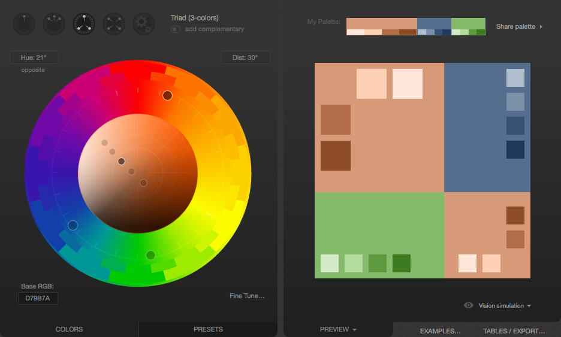
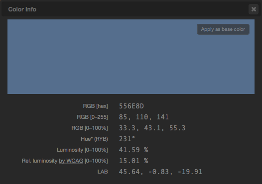

.png)


Цвет в web
В HTML цвет задается одним из двух путей: с помощью шестнадцатеричного кода и по названию некоторых цветов. Преимущественно используется способ, основанный на шестнадцатеричной системе исчисления, как наиболее универсальный.
Шестнадцатеричные цвета
Для задания цветов в HTML используются числа в шестнадцатеричном коде. Шестнадцатеричная система, в отличие от десятичной системы, базируется, как следует из ее названия, на числе 16. Цифры будут следующие: 0, 1, 2, 3, 4, 5, 6, 7, 8, 9, A, B, C, D, E, F. Числа от 10 до 15 заменены латинскими буквами.
Веб-цвета
Если установить качество цветопередачи монитора в 8 бит (256 цветов), то один и тот же цвет может показываться в разных браузерах по-своему. Это связано со способом отображения графики, когда браузер работает со своей собственной палитрой и не может показать цвет, который у него в палитре отсутствует. В этом случае цвет заменяется сочетанием пикселов других, близких к нему, цветов, имитирующих заданный. Чтобы цвет оставался неизменным в разных браузерах, ввели палитру так называемых веб-цветов. Веб-цветами называются такие цвета, для каждой составляющей — красной, зеленой и синей, устанавливается одно из шести значений — 0 (00), 51 (33), 102 (66), 153 (99), 204 (CC), 255 (FF). В скобках указано шестнадцатеричное значение данной компоненты. Общее количество цветов из всех возможных сочетаний дает 6х6х6 — 216 цветов. Пример веб-цвета — #33ff66.
Основная особенность веб-цвета заключается в том, что он показывается одинаково во всех браузерах. В данный момент актуальность веб-цветов весьма мала из-за повышения качества мониторов и расширения их возможностей.
Цвета по названию
Чтобы не запоминать совокупность цифр, вместо них можно использовать имена широко используемых цветов. В таблице приведены имена популярных названий цветов.
| Имя цвета | Цвет | Описание | Шестнадцатеричное значение |
|---|---|---|---|
| aqua | Голубой | #00ffff | |
| black | Черный | #000000 | |
| blue | Синий | #0000ff | |
| fuchsia | Фуксия | #ff00ff | |
| gray | Серый | #808080 | |
| green | Зеленый | #008000 | |
| lime | Светло-зеленый | #00ff00 | |
| maroon | Темно-красный | #800000 | |
| navy | Темно-синий | #000080 | |
| olive | Оливковый | #808000 | |
| purple | Фиолетовый | #800080 | |
| red | Красный | #ff0000 | |
| silver | Светло-серый | #c0c0c0 | |
| teal | Сине-зеленый | #008080 | |
| white | Белый | #ffffff | |
| yellow | Желтый | #ffff00 |
Используй цвет с умом
Правильный выбор при выборе цвета при разработке web-сайта может быть сложным процессом, особенно если вы недостаточно хорошо разбираетесь в искусстве, дизайне или, по крайней мере, в базовой теории цвета. Неправильный выбор цвета может сделать ваш сайт непривлекательным или, что еще хуже, оставить контент нечитаемым из-за проблем с контрастом или конфликтом цветов. Кроме того использование неправильных цветов может привести к тому, что ваш контент станет непригодным для использования людьми с определенными проблемами зрения(напр. дальтонизм)
Находим правильные цвета
Выбор правильных цветов может быть непростым делом, особенно без обучения искусству или дизайну. К счастью, есть инструменты, которые могут вам помочь. Хотя они не могут заменить наличие хорошего дизайнера, помогающего вам принимать эти решения, они определенно помогут вам начать.
Первый шаг - выбрать базовый цвет. Это цвет, который каким-то образом определяет ваш web-сайт или предмет сайта. Точно так же, как мы ассоциируем зеленый цвет с растениями, их листьями, лягушками или ящерицами, и так же можно подумать, что синий цвет связан с небом или океаном, выбор подходящего базового цвета для представления вашего сайта - это хорошее место для начала. Есть много способов выбрать основной цвет; Несколько идей включают в себя:
- Цвет, который естественно связан с темой вашего контента, например, существующий цвет, идентифицируемый с продуктом или идеей, или цвет, представляющий эмоцию, которую вы хотите передать.
- Цвет, который исходит от изображений, связанных с тем, о чем ваш контент. Если вы создаете web-сайт о данном элементе или продукте, выберите цвет, который физически присутствует на этом элементе.
- Просматривайте web-сайты, на которых можно найти множество существующих цветовых палитр и изображений, чтобы найти вдохновение.
Пытаясь выбрать базовый цвет, вы можете обнаружить, что расширения браузера, позволяющие выбирать цвета из web-содержимого, могут быть особенно полезны. Некоторые из них даже специально разработаны, чтобы помочь с такой работой. Например, web-сайт ColorZilla предлагает расширение (Chrome / Firefox), которое предлагает инструмент пипетки для выбора цветов из Интернета. Он также может принимать средние значения цветов пикселей в областях разного размера или даже в выбранной области страницы.
Давайте рассмотрим быстрый пример выбора подходящей цветовой палитры для сайта. Представьте, что вы создаете web-сайт для новой игры, которая происходит на планете Марс. Итак, давайте сделаем в Google запрос на поиск фотографий Марса. Там много хороших примеров марсианской окраски. Мы тщательно избегаем макетов и фотографий из фильмов. И мы решили использовать фотографию Марса, сделанную одним из кораблей, который человечество припарковало на поверхности за последние несколько десятилетий, поскольку игра происходит на поверхности планеты. Мы используем инструмент выбора цвета, чтобы выбрать образец цвета, который мы выбираем.
Используя пипетку, мы определяем понравившийся нам цвет и определяем, что рассматриваемый цвет - это # D79C7A, который является подходящим ржаво-оранжево-красным цветом, столь стереотипным для марсианской поверхности.
Выбрав наш основной цвет, нам нужно выстроить нашу палитру. Мы решили использовать Paletteon, чтобы придумать другие цвета, которые нам нужны. После открытия

Затем мы вводим шестнадцатеричный код нашего цвета (D79C7A) в поле «Base RGB» в нижнем левом углу инструмента:
Теперь мы видим монохроматическую палитру, основанную на цвете, который мы выбрали на фотографии Марса. Если по какой-то причине вам нужно много связанных цветов, они, вероятно, будут хорошими. Но то, что мы действительно хотим, это цвет акцента. Что-то, что будет всплывать вдоль основного цвета. Чтобы найти это, мы нажимаем кнопку «добавить дополнительный» под меню, которое позволяет вам выбрать тип палитры (в настоящее время «Монохромный»). Paletton вычисляет соответствующий цвет акцента; Щелчок по цвету акцента внизу в правом нижнем углу говорит нам, что этот цвет # 508D7C.
Если вы недовольны предложенным вам цветом, вы можете изменить цветовую схему, чтобы увидеть, что вам больше нравится. Например, если нам не нравится предложенный зеленовато-синий цвет, мы можем щелкнуть значок цветовой схемы Triad, который представляет нам следующее:
Этот серовато-синий в правом верхнем углу выглядит довольно хорошо. Нажав на нее, мы обнаружим, что это # 556E8D. Это будет использоваться в качестве цвета акцента, который будет использоваться экономно, чтобы выделить вещи, такие как заголовки или подсветка вкладок или других индикаторов на сайте:
Теперь у нас есть основной цвет и наш акцент. Кроме того, у нас есть несколько дополнительных оттенков каждого, на случай, если они нам понадобятся для градиентов и тому подобного. Затем цвета можно экспортировать в несколько форматов, чтобы вы могли использовать их. Если у вас есть эти цвета, вам, вероятно, все равно нужно будет выбрать подходящие нейтральные цвета. Обычная практика проектирования - пытаться найти приятное место, где достаточно контраста, чтобы текст был четким и читабельным, но недостаточно контрастным, чтобы стать резким для глаз. Легко зайти так или иначе слишком далеко, поэтому обязательно получайте отзывы о своих цветах, как только вы их выбрали, и предоставьте примеры их использования. Если контраст слишком низкий, ваш текст будет размыт фоном, что сделает его нечитабельным, но если ваш контраст слишком высок, пользователь может найти ваш сайт ярким и неприятным для просмотра.